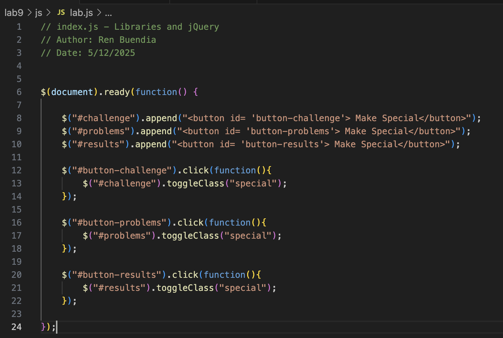

Lab 9 - Libraries and jQuery
Challenge
Our challenge for this lab was to experiment with jQuery and implement it into this website.
Problems
The only problems that arose were simple syntax erorrs. For example, we had "." instead of "#", and we had to turn our class sections into id sections so that the "#" would work properly.
Reflection
We didn't have many issues with this assignment other from the syntax issues that me and my partner ended up resolving.
Results
This is the JavaScript for my Lab 9 page.
